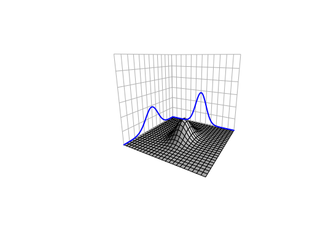
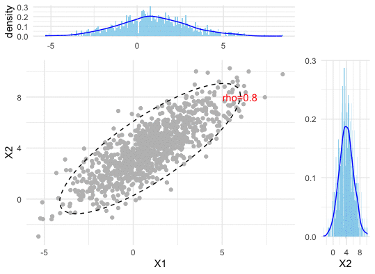
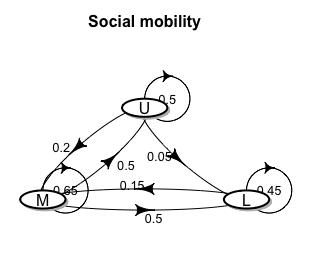

Our states are somehow dependent on and co-varies with our experiences, our epistemic and aesthetic norms, or more generally our changable roles in this world. On the other hand, the world has various paradigms, cultures, and belief systems that attribute different values to an individual’s state. An interference with the world could make one’s state an uncertain object.
In reality, when we consider the uncertainty of multiple random events ahead that co-vary with each others, we tend to find out a law to characterize these events in a unified way. It turns out that vectors and matrices are indispensable to construct the characterizations for this joint venture.
The previous examples in section 12.4 of data vectors didn’t involve any discussion about uncertainty. In reality, most datasets contain (more or less) some random features. When the uncertainty enters one’s concern, one may think that behind all the uncertain random events lie certain laws of probabilities. The event which one actually observes in a single instance could always be referred to a collection of events that might have happened. In other words, if one observes a single event, say \(x_t\) at time \(t\) from a random experiment, it is possible that at time \(t\) the experiment can generate a set of possible outcomes. It is by chance that the value \(x_t\) was generated, but if the experiment runs in a “parallel” world at time \(t\), the outcome \(x_t\) could be different from the current one.245 This argument relates to the many-worlds interpretation or many-minds interpretation in quantum mechanics where nondeterministic observations root in the system that “selects” a single value in the range of possible values.
By this argument, we can treat \(x_t\) at every time \(t\) as a realization of a random variable \(X_t(\omega)\). And since the time series data vector contains a series of realizations, say \([x_1,\dots,x_T]^\top\), we have to consider this whole vector to be a realization from a random vector \(\mathbf{X}(\omega) =[X_1(\omega),\dots,X_T(\omega)]^\top\).246 The \(\omega\), as the use in chapter 9.4, stands for a deeper invisible state that generates the outcome of the random variable. Any attempt of understanding the underlying law of such data vectors becomes an attempt of understanding the underlying joint probability law of \(X_1(\omega),\dots,X_T(\omega)\), namely \(\mathbb{P}(X_1,\dots,X_T)\).
The probability distribution refering to a joint probability of a random vector is called the multivariate distribution. We explore some properties of the multivariate distribution through one of the most important multivariate distributions, the multivariate normal (Gaussian) distribution. Recall that a standard normal random variable \(X\sim \mathcal{N}(0,1)\) has the density function \(f(x)=\frac{1}{\sqrt{2\pi}}\exp(x^2)\) for \(x\in\mathbb{R}\). Now let \(X_1(\omega),\dots X_T(\omega) \sim \mathcal{N}(0,1)\) be independent random variables. The joint density of such a vector \(\mathbf{X}(\omega)=[X_1(\omega),\dots,X_T(\omega)]^\top\) is \[ \begin{align*} f(\mathbf{x})&=\prod_{t=1}^{T}f(x_{t})=\frac{1}{(2\pi)^{T/2}}\exp\left\{ -\frac{1}{2}\sum_{t=1}^{T}x_{t}\right\} \\ &=\frac{1}{(2\pi)^{T/2}}\exp\left\{ -\frac{1}{2}\mathbf{x}^{\top}\mathbf{x}\right\}. \end{align*} \] which is the standard multivariate normal density.
Figure 13.1: Joint density of two independent normal random variables
The independence property splits the joint density into product of individual densities \(f(\mathbf{x})=\prod_{t=1}^{T}f(x_{t})\). The assumption of independence may be violated in many situations. In the dynamical enviorments, an event \(X_{t}(\omega)\) is followed by another event \(X_{t+1}(\omega)\), so it is natural to think that the arrow of time attaches some kind of the dependent chain between these two successive events. From another perspective, when one suspects that an interaction happened between \(Y(\omega)\) and \(X(\omega)\), it is also natural to treat \(Y(\omega)\) and \(X(\omega)\) jointly as a vector, and to assume some degree of dependence between these two random elements.247 Essentially, since we consider that the variables \(\{X_1(\omega),\dots,X_T(\omega)\}\) or \(\{Y(\omega), X(\omega)\}\) depend on the same invisible state \(\omega\), the dependence may come with the underlying features that are shared by all the variables generated by \(\omega\). For example, the conditional structure \(Y|X\) used in a probabilistic causation simply assumes the dependence exist.248 If \(Y\) and \(X\) are independent, then the conditional probability \[ \begin{align*} \mathbb{P}(Y|X)= \frac{\mathbb{P}(X,Y)}{\mathbb{P}(X)}\\ =\frac{\mathbb{P}(X)\mathbb{P}(Y)}{\mathbb{P}(X)}=\mathbb{P}(Y) \end{align*} \] will not reveal any convincing causal relation between \(Y\) and \(X\).
The dependence or independence is a condition regarding the joint probability law. For any normal distributed random variable \(X\sim \mathcal{N}(\mu,\sigma^2)\), the whole distribution is characterized by the mean \(\mu\) and the variance \(\sigma^2\), namely a first and a second order information criteron respectively. The covariance is a second order information criterion to depict the dependence between any two random variables. Futhermore, the covariance matrix of any random vector \(\mathbf{X}(\omega)\) gives a characterization of the dependence amongst any two random variables \(X_i, X_j\) of the vector \(\mathbf{X}(\omega)\).
If any \(X_i\) in \(\mathbf{X}(\omega)\) is a normal random variable, then \(\mathbf{X}(\omega)\) follows the multivariate normal distribution such that \(\mathbf{X}(\omega)\sim\mathcal{N}\left(\mathbf{\mu},\:\Sigma\right)\), where \(\mathbf{\mu}=[\mu_1,\dots,\mu_T]^\top\) is the mean vector, namely \(\mathbf{\mu}\), and \(\Sigma\) is the covariance matrix. The density function of \(\mathbf{X}(\omega)\) is given by \[f(\mathbf{x})=\frac{1}{(2\pi)^{T/2}|\Sigma|^{1/2}}\exp\left\{ -\frac{1}{2}(\mathbf{x}-\mathbf{\mu})^{\top}\Sigma^{-1}(\mathbf{x}-\mathbf{\mu})\right\}.\]
Figure 13.2: Correlation (dependence pattern) changes of a bivariate normal density
It is easy to show that for any real vector \(\mathbf{a}\) and \(\mathbf{b}\) and the random vector \(\mathbf{X}(\omega) \sim \mathcal{N}(\mathbf{\mu}, \Sigma)\), the expectation and (co)variance operation for a linear/affine transformation have the following results \(\mathbb{E}[\mathbf{a}^\top \mathbf{X}(\omega) + \mathbf{b}]=\mathbf{a}^\top \mathbf{\mu} + \mathbf{b}\), and \(\mbox{Var}(\mathbf{a}^\top \mathbf{X}(\omega) + \mathbf{b})=\mathbf{a}^\top \Sigma \mathbf{a}\). These results are analogous to those in the scalar cases. One can extend the results for any real matrix \(\mathbf{A}\): \(\mathbb{E}[\mathbf{A} \mathbf{X}(\omega)]=\mathbf{A} \mathbf{\mu}\), and \(\mbox{Var}(\mathbf{A} \mathbf{X}(\omega))=\mathbf{A} \Sigma\mathbf{A}^\top\). These relations indicate that it is possible to construct any multivariate normal distribution by the standard one. The idea is to decompose the covariance matrix as a product, i.e. \(\Sigma=\mathbf{A}\mathbf{A}^\top\). With this decomposition, we can represent any \(\mathbf{X}(\omega) \sim \mathcal{N}(\mathbf{\mu}, \Sigma)\) by \[ \mathbf{A}\mathbf{W}(\omega) + \mathbf{\mu},\,\, \mbox{ where } \mathbf{W}(\omega) \sim \mathcal{N}(0, \mathbf{I})\] where \(\mathbf{W}(\omega)\) is the standard multivariate normal random vector. The decomposition \(\Sigma=\mathbf{A}\mathbf{A}^\top\) utilizes several properties of the covariance matrix. We are going to examine these properties one by one.
One important property of the variance is that \(\mbox{Var}(X)>0\) for any random variable \(X\). The covariance of any two random variables, however, can be either positive or negative, because the dependence can comes from a positive or negative relation. So we cannot say that all entries of the covariance matrix \(\mbox{Var}(\mathbf{X}(\omega))\) are positive. But \(\mathbf{a}^\top \Sigma \mathbf{a}\) must be non-negative for any real non-zero vector \(\mathbf{a}\).249 Otherwise, we may have \(a^2_i\mbox{Var}(X_i)<0\) at some entry \(X_i\). As \(a^2_i\) is non-negative, we have \(\mbox{Var}(X_i)<0\) for a random variable \(X_i\). This resutl contradicts with the property of the variance operator. Any matrix satisfying \(\mathbf{a}^\top \Sigma \mathbf{a}\geq 0\) for non-zero real vector \(\mathbf{a}\) is called positive (semi-)definite matrix.
The eigenvalues of the positive (semi-)definite matrix are real postive. Let \(\lambda\) be an eigenvalue of \(\Sigma\), and let \(\Sigma \mathbf{v}=\lambda \mathbf{v}\) for some non-zero eigenvector \(\mathbf{v}\). It is obvious to see that \[\mathbf{v}^{\top}\Sigma\mathbf{v}=\mathbf{v}^{\top}\lambda \mathbf{v}=\lambda\|\mathbf{v}\|^{2}.\] As \(\mathbf{v}^{\top}\Sigma\mathbf{v}\geq 0\) by the definition of positive (semi-)definite matrix, \(\lambda\|\mathbf{v}\|^{2}\geq 0\). Because \(\|\mathbf{v}\|^{2}\geq 0\), we can see that \(\lambda\) is a real positive number.
In addition, we can see that the covariance matrix \(\Sigma\) is symmetric. Recall that eigenvalue-eigenvector decomposition \(\Sigma=\mathbf{V}\Lambda \mathbf{V}^{-1}\) where \(\Lambda\) is the diagonal eigenvalue matrix. By the transposed operations, we have \[\Sigma^\top=(\mathbf{V}\Lambda \mathbf{V}^{-1})^\top = (\mathbf{V}^{-1})^\top \Lambda (\mathbf{V})^\top\] where \(\Lambda=\Lambda^\top\) by the diagonal property. The symmetry of \(\Sigma\) gives \(\mathbf{V}\Lambda \mathbf{V}^{-1}=(\mathbf{V}^{-1})^\top \Lambda (\mathbf{V})^\top\) or say \[\Lambda = \left(\mathbf{V}^{-1}(\mathbf{V}^{-1})^\top\right) \Lambda \left(\mathbf{V}^\top\mathbf{V}\right).\] One can infer that \(\mathbf{V}^\top\mathbf{V}=\mathbf{I}\) or \(\mathbf{V}^\top =\mathbf{V}^{-1}\). In other words, for a symmetric square matrix of real-valued entries, the eigenvector matrix \(\mathbf{V}\) are orthonormal \(\mathbf{V}^\top\mathbf{V}=\mathbf{I}\), namely all vectors in \(\mathbf{V}\) are mutually orthogonal and all of unit length.250 Any two vectors \(\mathbf{v}_i, \mathbf{v}_j\) in the matrix \(\mathbf{V}\) are orthogonal \(\mathbf{v}_i^\top \mathbf{v}_j=\left\langle \mathbf{v}_{i},\mathbf{v}_{j}\right\rangle =0\). The norm of the any vector in \(\mathbf{V}\) is one: \(\|\mathbf{v}_i\|=\sqrt{\left\langle \mathbf{v}_{i},\mathbf{v}_{i}\right\rangle}=1\).
Now we can rewrite \(\Sigma=\mathbf{V}\Lambda \mathbf{V}^{-1}\) as \(\Sigma=\mathbf{V}\Lambda \mathbf{V}^\top\). Since \(\Lambda\) is a diagonal matrix with real positive entries \(\{\lambda_i\}\), we can represent \(\Lambda\) by \(\Lambda=\mathbf{S}\mathbf{S}\) where \(\mathbf{S}\) is also a diagonal matrix with real positive entries \(\{\sqrt{\lambda_i}\}\). Then the covariance matrix becomes \[\Sigma=\mathbf{V}\mathbf{S}\mathbf{S}^\top \mathbf{V}^\top=(\mathbf{V}\mathbf{S})(\mathbf{V}\mathbf{S})^\top.\] Let’s denote \(\mathbf{V}\mathbf{S}\) by \(\mathbf{A}\). We have the desired result \(\Sigma=\mathbf{A}\mathbf{A}^\top\). The result is called the Cholesky decomposition. It says that any symmetric positive semi-definite matrix \(\Sigma\) can be decomposed as a product of one matrix \(\mathbf{A}\) and its transpose \(\mathbf{A}^\top\).251 Such a matrix \(\mathbf{A}\) is analogous to the matrix version square root of \(\Sigma\). Unlike the real numbers, whose expression of a square root is unique. The “square root” of a matrix does not have a unique representation. For example, if one selects an orthonormal matrix \(\mathbf{U}\) such that \(\mathbf{U}\mathbf{U}^\top = \mathbf{I}\), then \[\Sigma = \mathbf{A}\mathbf{A}^\top=\mathbf{A}\mathbf{I}\mathbf{A}^\top=(\mathbf{A}\mathbf{U})(\mathbf{A}\mathbf{U})^\top\] is also a valid representation for \(\Sigma\).
The multivariate normal distribution of \(\mathbf{X}(\omega)\) gives a full description about the dependent structure amongst all normal random variables in the random vector \(\mathbf{X}(\omega)\). With the joint probability law, we can derive other useful dependent structures. For example, the conditional probability can induce the probabilistic causal relation as the conditional probability law implicitly treats the conditions as the (probabilitistic) cause.
The calculation of multivariate conditional probability is non-trivial. Take a \(2N\)-dimensional multivariate normal random vector as an example. By splitting the vector into two subvectors, we have the following expression for the joint density \[ \begin{bmatrix} \mathbf{Y}(\omega) \\ \mathbf{X}(\omega) \end{bmatrix} \sim \mathcal{N} \left( \begin{bmatrix} \mathbf{\mu_y} \\ \mathbf{\mu_x} \end{bmatrix} , \begin{bmatrix} \Sigma_{11} & \Sigma_{12} \\ \Sigma_{21} & \Sigma_{22} \end{bmatrix} \right) \] where \(\Sigma_{11}\), \(\Sigma_{22}\) are the covariance matrices of the random vectors \(\mathbf{Y}(\omega)\) and \(\mathbf{X}(\omega)\) respectively, and \(\Sigma_{12} = \Sigma_{21}\) is \(\mbox{Cov}(\mathbf{Y}(\omega), \mathbf{X}(\omega))\).
If we want to calculate the conditional density \((\mathbf{Y}|\mathbf{X})(\omega)\), then in principle we need to compute \(f(\mathbf{y}|\mathbf{x})=f(\mathbf{y}, \mathbf{x})/f(\mathbf{x})\).252 The full expression of the joint density function \(f(\mathbf{y}, \mathbf{x})\) contains the term \[ \left[\begin{array}{c} \mathbf{y}-\mathbf{\mu_{y}}\\ \mathbf{x}-\mathbf{\mu_{x}} \end{array}\right]^\top\left[\begin{array}{cc} \Sigma_{11} & \Sigma_{12}\\ \Sigma_{21} & \Sigma_{22} \end{array}\right]^{-1}\left[\begin{array}{c} \mathbf{y}-\mathbf{\mu_{y}}\\ \mathbf{x}-\mathbf{\mu_{x}} \end{array}\right] \] which requires to evaluate the inversion of the block matrices. Rather than fully involve in the derivation of the conditional density, we give the direct results of conditional vector mean and conditional covariance matrix, and then consider why such results make sense. \[ \begin{align*} \mathbb{E}[\mathbf{Y}(\omega) | \mathbf{X}(\omega)=\mathbf{x}]&= \mathbf{\mu_y} + \Sigma_{12} \Sigma_{22}^{-1} \left( \mathbf{x} - \mathbf{\mu_x} \right),\\ \mbox{Var}[\mathbf{Y}(\omega) | \mathbf{X}(\omega) =\mathbf{x}] &= \Sigma_{11} - \Sigma_{12} \Sigma_{22}^{-1} \Sigma_{21}. \end{align*} \] The results show that the conditioning vector \(\mathbf{x}\) will adjust the first and the second moment information criteria of dependent vector \(\mathbf{Y}(\omega)\).
This conditional covariance matrix \(\Sigma_{11} - \Sigma_{12} \Sigma_{22}^{-1}\Sigma_{21}\) is the Schur complement of \(\Sigma_{22}\). Similar to the role in the block LU factorization, such a term is to eliminate the covariance blocks corresponding to the variables being conditioned upon. The main instrument \(\Sigma_{12} \Sigma_{22}^{-1}\) is to eliminate the dependence caused by \(\mathbf{X}(\omega)\).
Proof of the elimination
The conditional results of mean vector and covariance matrix serve the foundation of estimating a dynamical system adaptively. We will see in [?]. For now, a quick application is to use the conditional results to recover the joint density.253 Any two dependent random variables \(X_2\) and \(X_1\) have the expression \[\mathbb{P}(X_2, X_1)=\mathbb{P}(X_2\,|\,X_1)\mathbb{P}(X_1)\] which tells how to compute the joint by the conditionals.
Simulate the bivariate normal random vector
The sequence of random variables \(X_{1}(\omega),\dots X_{t}(\omega)\) refers to a stochastic process if one wants to emphasize that the index of the sequence indicates the successive steps.
Discussion about the filter
Roughly speaking, a stochastic process is a collection of random variables indexed by time \(t\). A discrete time stochastic processes \(\{X_{1},\dots,X_{T}\}\) is simply a random vector whose random entries emerge following the arrow of time, namely a time series with random entities. However, the flowing time illuminates that the index number \(t\) can grow, and that the time series may not remain at a modest size. In this case, the joint probability law \(\mathbb{P}(X_{1},\dots,X_{T})\) may need to be characterized by a rather high dimensional multivariate distribution if \(t\) grows to a large enough number.257 For example, a \(10\)-dimensional multivariate normal joint density needs to specify \(55\) entries of its covariance matrix (half of the off-diagonal entries are identical). That is to say, the computational complexity will grow exponentially as the dimension grows. Nowadays, the length of a simple data vector can easily go beyond \(10^{3}\). The specification of the joint probability law in a high dimensional space may be so complex (in both theoretical and applicable aspects) that we need an alternative method to interpret the law.
One method of fighting with the growing complexity is to keep the law in a tractable representation by using conditioning.258 We can see that the filtration \(\{\mathcal{F}_{t}:t\leq T\}\) is generated by \(\{ X_t(\omega) \}_{0<t\leq T}\). Thus the dependent structure of the series \(\{ X_t(\omega) \}_{0<t\leq T}\) also comes from the conditioning of the historical information generated by \(\{ X_t(\omega) \}_{0<t< T}\). Recall that in the simulation of the bivariate normal random vector, we use two one-dimensional random variables by splitting the joint probability law into the conditionals, i.e. \(\mathbb{P}(X_{2},X_{1})=\mathbb{P}(X_{2}\,|\, X_{1})\mathbb{P}(X_{1})\). For a discrete time stochastic process, we can recursively apply the splittings to the joint probability259 For a continuous time stochastic process, the splitting trick generally does not work unless the probability law acquires some additional structure that behaves like an exponent, called semi-group. We will see it in sec[?]. \[\mathbb{P}(X_{1},\dots,X_{T})= \\ \mathbb{P}(X_{T}|X_{T-1},\dots X_{1})\mathbb{P}(X_{T-1}|X_{T-2},\dots X_{1})\cdots\mathbb{P}(X_{2}|X_{1})\mathbb{P}(X_{1}).\] The splitting works but it does not completely resolve the complexity issue, as the conditional distributions \(\mathbb{P}(X_{T}|X_{T-1},\dots X_{1})\), \(\mathbb{P}(X_{T-1}|X_{T-2},\dots X_{1})\), etc, generally involve an intensive computation (like the one we saw in the multivariate normal case).
The splitting conditionals utilitize the full history of the process up to the current step to determine the probability for the next step, which greatly complicates analysis. However, our sense of the passage of time leads us to arrange events in the following manner: the past of our memory just fades out when we proceed; our perceptions highly depend on our present feelings but not so much on the historical ones. Extending this idea to the conditionals, we can replace those long-term conditions by the short-term ones including one and only one conditioning variable: \[\mathbb{P}(X_{1},\dots,X_{T})=\mathbb{P}(X_{T}|X_{T-1})\mathbb{P}(X_{T-1}|X_{T-2})\cdots\mathbb{P}(X_{2}|X_{1})\mathbb{P}(X_{1}),\] where each conditional probability \(\mathbb{P}(X_{t+1}|X_{t})\) is about “one-step” transition, namely regarding the future evolution at time \(t\) depends only on the current state \(X_{t}\). The system is said to possess the Markov’s principle: a principle of alleviating the complicated long-term dependence by using the simple short-term substitutes. A stochastic process whose probability law satisfies the Markov’s principle is also called a Markov process.260 Markov’s principle is not restrict to stochastic models. Most dynamical problems of our interests satisfy this principle. For instance, the deterministic iterative model \(\mathbf{x}_{t+1}=\mathbf{A}\mathbf{x}_{t}\), and the nonlinear iterative model \(\mathbf{x}_{t+1}=f(\mathbf{x}_{t})\) for some continous real-valued function \(f(\cdot)\) are Markov’s models due to the fact that the dynamics depends on the current state \(\mathbf{x}_{t}\), and that all the previous state \(\mathbf{x}_{t-1},\dots,\mathbf{x}_{1}\) are completely irrelevant in the current dynamical law. The automous ODE \(\frac{\mbox{d}\mathbf{x}(t)}{\mbox{d}t}=f(\mathbf{x}(t))\) also satisfies the principle for the differential \(\mbox{d}\mathbf{x}(t)/\mbox{d}t\). But the (solution) process \(\mathbf{x}(t)=\int_{0}^{t}f(\mathbf{x}(s))\mbox{d}s\) does not.
The Markov’s principle views the discrete time dynamics as a chain of multiple transitions. Given the initial probability \(\mathbb{P}(X_1)\), the dynamics of the process \(\{ X_t(\omega) \}_{t=1,\dots, T}\) is completely described by the (one-step) transition probabilities \[\mbox{P}_{t}(x,\mathcal{A})=\mathbb{P}\left(X_{t+1}(\omega)\in\mathcal{A}\,|\,X_{t}(\omega)=x\right)\] that are well defined for any appropriate initial state (of the transition) \(x \in \mathcal{X}\) and the target set (of the transition) \(\mathcal{A}\in \sigma(\mathcal{X})\), with \(\mbox{P}_{t}(x,\mathcal{X})=1\) at time \(t=1,2,\dots, T-1\). Any multiple step of the transition can be presented as the integral of the transition probabilities. For example, the conditional probability of a two step ahead transition is \[\begin{align*} \mathbb{P}(X_{t+2}\in \mathcal{A} | X_{t}=x) &= \int_{x' \in \mathcal{X}} \mathbb{P}(X_{t+2}\in \mathcal{A} | X_{t+1}=x') \mathbb{P}(X_{t+1}\in dx' | X_{t}=x) \\ &= \int_{x' \in \mathcal{X}} \mbox{P}_{t+1} (x',\mathcal{A}) \mbox{P}_{t} (x,dx'), \end{align*} \] where the intermediate step on the state variable \(X_{t+1}\) is “integrated out.”261 Note that the infinitesimal state \(dx'\) is measurable in \(\sigma (\mathcal{X})\). The discrete time Markov process is also known as Markov chain. The above integral equation is called Chapman–Kolmogorov equation that identifies the joint probability law via chainning up the transition probabilities.
The transition probability is time-homogeneous if \[\mbox{P}_{t}(x,\mathcal{A})=\mbox{P}(x,\mathcal{A})\] for all \(t=1,\dots, T-1\). The joint probability of the time-homogeneous Markov chain is then chainned up by the identical transition probabilities. The \(t+k\)-step ahead Chapman-Kolmogorov equation of the time-homogeneous Markov chain is \[ \begin{align*} & \mathbb{P}(X_{t+k}\in \mathcal{A} | X_{1}=x) \\ &= \int_{x'\in\mathcal{X}} \mathbb{P}(X_{t+k}\in \mathcal{A} | X_{t}=x') \mathbb{P}(X_{t}\in \mbox{d}x' | X_{1}=x) \\ &= \int_{x_{t+k-1} \in \mathcal{X}}\cdots \int_{x_{2} \in \mathcal{X}} \mbox{P}(x_{t+k-1},\mathcal{A}) \cdots \mbox{P} (x_{2},\mbox{d}x_{3}) \mbox{P} (x,\mbox{d}x_{2}). \end{align*} \]
Many practial stochastic models satisfy the Markov’s principle. For example, AR(1) model of random variables, \(X_{t+1}=\phi X_{t}+\varepsilon_{t}\) is a Markov chain, as \(X_{t+1}\) is independent of \(X_{t-1},X_{t-2},\dots\), given the current value \(X_{t}=x\).262 The AR(\(k\)) model is also a Markov chain in the general sense, but in our context, we only consider the (first-order) Markov’s principle with the one-step ahead rather than \(k\)-step ahead transitions. However, we can always make an AR(\(k\)) model \(X_{t+1}=\phi_{1}X_{t}+\cdots\phi_{k}X_{t-k+1}+\varepsilon_{t}\) satisfy the (first-order) Markov’s principle by constructing a vector AR(1) model \(\mathbf{X}_{t+1} = \Phi \mathbf{X}_{t} +\mathbf{e}_t\) in terms of the multivariate vector \(\mathbf{X}_{t+1}=[X_{t+1}(\omega),\dots X_{t-k+1}(\omega)]^{\top}\) where \[\Phi=\left[\begin{array}{cccc} \phi_{1} & \cdots & \cdots & \phi_{k}\\ 1 & & 0 & 0\\ & \ddots & & \vdots\\ 0 & & 1 & 0 \end{array}\right]\] and \(\mathbf{e}_t = [\varepsilon_{t}, 0, \dots ,0]^\top\). Let’s consider a specific AR(1) model whose errors are normal random variables \(\varepsilon_t \sim \mathcal{N}(0,\sigma^2)\). Given the state value \(X_{t}(\omega)=x\), the linear representation of the normal random \(\varepsilon_t\) tells that \(\phi x +\varepsilon_t \sim \mathcal{N}(\phi x, \sigma^2)\). So the conditional probability \(\mathbb{P}(X_{t+1} \in \mathcal{A}| X_{t}=x)\) of this AR(1) has the transition probability \(\mbox{P}_t(x,\mathcal{A})=\Pr (\mathcal{N}(\phi x, \sigma^2)\in \mathcal{A})\).
Markov’s principle will simplify a surprisingly wide variety of phenomena if we only consider the state space of discrete random variables. That is, all possilbe states are discrete states. Then the transition probability for Markov chain can be expressed compactly by a (probability) transition matrix.
A stochastic matrix is a square matrix \(\mathbf{P}\) with entries \(\{p_{ij}\}\) such that \(p_{ij}\geq0\) for all \(i,j\), and for each row \(i\), \(\sum_{j}p_{ij}=1\). This matrix becomes the probability transition matrix for Markov chain if each entries represents the probability of a one-step transition amongst the states. Let’s illustrate this matrix through a social mobility model. Sociologists broadly categorize the population of a country into upper- (U), middle- (M), and lower (L)-class brackets. One of their concerns is to monitor the movement of successive generations among these three classes. We can model these three classes as three states. Let \(X_t(\omega)\) be the class for the \(t\)-th generation of a family. Then the state space of \(X_t(\omega)\) is \((\mathcal{X}, \sigma(\mathcal{X}))\) with \(\mathcal{X}=\{\mbox{L}, \mbox{M}, \mbox{U}\}\). Markov’s principle implies that the class of any generation does not depend on the ancestry but only on the class of its parent generation. If we assume that this the social mobility transition patterns holds for any generation \(t\) in the family, then \(X_t(\omega)\) is a time-homogenous Markov chain. The time-homogenous transition probabilities \(\mbox{P}(x,x')=\mathbb{P}\left(X_{t+1}(\omega)=x'\,|\,X_{t}(\omega)=x\right)\) for \(x,x'\in \{\mbox{L}, \mbox{M}, \mbox{U}\}\) is contained in the following table
| \(X_{t+1} \backslash X_{t}\) | \(\mbox{L}\) | \(\mbox{M}\) | \(\mbox{U}\) |
|---|---|---|---|
| \(\mbox{L}\) | 0.45 | 0.5 | 0.05 |
| \(\mbox{M}\) | 0.15 | 0.65 | 0.2 |
| \(\mbox{U}\) | 0 | 0.5 | 0.5 |
In addition, if we label \(\mbox{L}=1\), \(\mbox{M}=2\), \(\mbox{U}=3\), then we can use a probability transition matrix to present the previous table: \[\mathbf{P}=[p_{ij}]_{1\leq i,j \leq 3} = \left[\begin{array}{ccc} 0.45 & 0.5 & 0.05\\ 0.15 & 0.65 & 0.2\\ 0 & 0.5 & 0.5 \end{array}\right]\] where \(p_{ij}=\mathbb{P}(X_{t+1}=j|X_{t}=i)\) represents the probability of one-step transition from state \(i\) to state \(j\) at any generation \(t\).
Figure 13.3: Graphic representation of the probability transition matrix
Sometimes, it more straightforward to visualize the probability transition matrix through its graphic representation. The states are the nodes in the graph, and each probability entry is the flow between two nodes. That is, a (probabilistic) flow departs from the vertex \(j\) and enters the vertex \(i\) with the weight \(p_{ij}\).263 The reason of existing a graphic representation for each Markov chain comes from that fact that any complete network is a chain. Recall that a graph or a network corresponds a collection of order pairs \((\mathcal{V},\mathcal{E})\). In the set theoretic sense, a chain means a total ordered set. The completeness here refers to the fact that \((\mathcal{V},\mathcal{E})\) gives a total ordered set: namely any two vertices in the network can be decided whether they are connected or not.
Code
The Chapman-Kolmogorov equation for time-homogenous Markov chain now is simplified as a matrix-matrix multiplication \[\mathbf{P}^{k+t}=\mathbf{P}^{k}\mathbf{P}^{t}\] where \(p^{t+k}_{ij}=\sum_{s=1,2,3}p^{k}_{is}p^{t}_{sj}\) for states \(i, j\) and the state \(s\) stands for the intermediate state that can take any of the three possibilities. To derive the above result, let’s consider the meaning of \(\mathbf{P}^2\). Notice that the meaning of \(p_{is}p_{sj}\) is \[\begin{align*} p_{is}p_{sj}&=\mathbb{P}(X_{t+2}=i|X_{t+1}=s)\mathbb{P}(X_{t+1}=s|X_t=j)\\ &=\mathbb{P}(X_{t+2}=i,X_{t+1}=s|X_t=j) \end{align*} \] where the second equality comes from the Markov’s principle of the joint probability. Then by calculating all the possible states of \(s\), we have \(\mathbb{P}(X_{t+2}=i|X_t=j)= \sum_{s=1,2,3} p_{is}p_{sj}\). Because \[\mathbf{P}^2 = \left[\sum_{s}p_{is}p_{sj}\right]_{1\leq i\,,\,j\leq3}\] we know that \(\mathbf{P}^2\) is probability transition matrix of two-steps ahead, namely \(\mathbb{P}(X_{t+2}|X_t)\). We can generalize the result that the \(k\)-step probability transition matrixof this time-homogeneous Markov chain must be \(\mathbf{P}^k\).
## [,1] [,2] [,3]
## [1,] 0.2775 0.5750 0.1475
## [2,] 0.1650 0.5975 0.2375
## [3,] 0.0750 0.5750 0.3500## [1] 1 1 1## [,1] [,2] [,3]
## [1,] 0.1606135 0.5882353 0.2511512
## [2,] 0.1604433 0.5882353 0.2513214
## [3,] 0.1602730 0.5882353 0.2514917## [1] 1 1 1Because any \(k\) power of the probability transition matrix \(\mathbf{P}\) can be splitted as the sum of products of \(l\)-step and \(k − l\)-step transition probability matrices, we can split \(\mathbf{P}^{k+t}\) as the products of \(\mathbf{P}^{k}\) and \(\mathbf{P}^{t}\) that exactly coincides with the purpose of Chapman-Kolmogorov equation.
The idea of modeling dynamics by chains originated from a metaphysical topic called the great chain of being where the chain was conceived as a static hierarchy, starting with God at the top and descending through angels, human beings, animals, etc. This progression of the life forms gave the basis for the idea of evolution: complex structures emerge from simpler forms through (natural) selection mechanisms.264 In political and social science, creating secular governmental structures that vested power into various classes of citizens was viewed as an evolutionary movements in Hegel, Marx and Engels’ work. However, the theory of evolution plays several different roles over there, some toward increasing the order and complexity while some mean just the opposite. Another feature of the chain is that although it was viewed as one continuous whole, it has the potential for the missing and overlapping links. Each link in the chain might be splitted further. Based on the dual nature of the chain - divided yet united, Carl Linnaeus, who is considered as one of the founders of ecology, formalised his modern system of naming organisms (taxonomy).
Page built: 2020-07-30